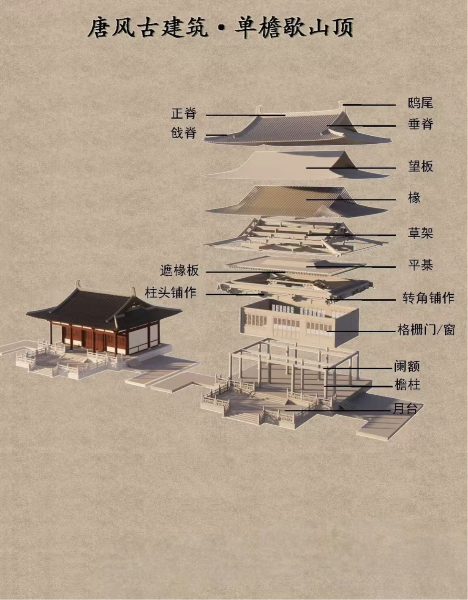

中国古建筑脊构件知识介绍
一、基础结构脊
正脊
位置：屋顶最高处，连接前后两坡的交接处
作用：承受屋顶最大的垂直压力，是屋顶结构的"顶梁柱"
特征：通常是一条平直的脊，只有一条
垂脊
位置：从正脊的两端向下垂落，沿着屋顶坡度延伸
作用：连接屋面与山墙，排水
特征：只要有坡屋顶就有垂脊
二、等级分类脊
戗脊
关联建筑：歇山顶大殿（如故宫太和门、孔庙大成殿）、悬山顶
特征：从正脊末端出发，斜着向下延伸到屋角，形状像一条"斜梁"
九脊成就：歇山顶有1条正脊+4条垂脊+4条戗脊=9条脊，这也是"九脊封"的由来
等级：地位极高，是官府和皇宫建筑的标志性特征
围脊
关联建筑：庑殿顶（故宫太和殿）
特征：庑殿顶有四面坡，中间有一条"正脊"，四面有四条"垂脊"
总数量：1正脊+4垂脊+4围脊=9条脊（宏观上看）
三、特殊装饰脊
脊兽（瑞兽）
位置：垂脊和戗脊的末端
文化：走兽数量代表等级（如太和殿有10个，是唯一的特例）
仙人走兽：最前面是骑凤仙人，后面依次是龙、凤、狮子、天马等
博脊
用途：用于山花板（屋顶侧面三角形部分）底部的短脊
作用：主要用于装饰和收口
角脊
关联建筑：攒尖顶建筑（如亭子、天坛祈年殿）
特征：所有的脊都从屋顶中心向四周辐射汇聚到一个宝顶，没有正脊，只有多条垂脊汇聚

古建筑构件示意图
建筑等级与脊的对应关系
皇宫建筑
屋顶类型：庑殿顶、歇山顶
脊的数量：9条（九脊封）
脊兽数量：7-10个
代表建筑：故宫太和殿、太和门
官府建筑
屋顶类型：歇山顶、悬山顶
脊的数量：5-9条
脊兽数量：3-7个
代表建筑：孔庙大成殿、各地衙门
民居建筑
屋顶类型：硬山顶、悬山顶
脊的数量：5条（五脊封）
脊兽数量：1-3个
代表建筑：四合院、祠堂
脊的文化意义
建筑等级象征：脊的数量和装饰直接反映建筑等级
文化传承：脊兽、吻兽等装饰承载着深厚的文化内涵
工艺体现：脊的制作工艺体现了古代工匠的精湛技艺
美学价值：脊的造型和装饰是中国古建筑美学的重要组成部分